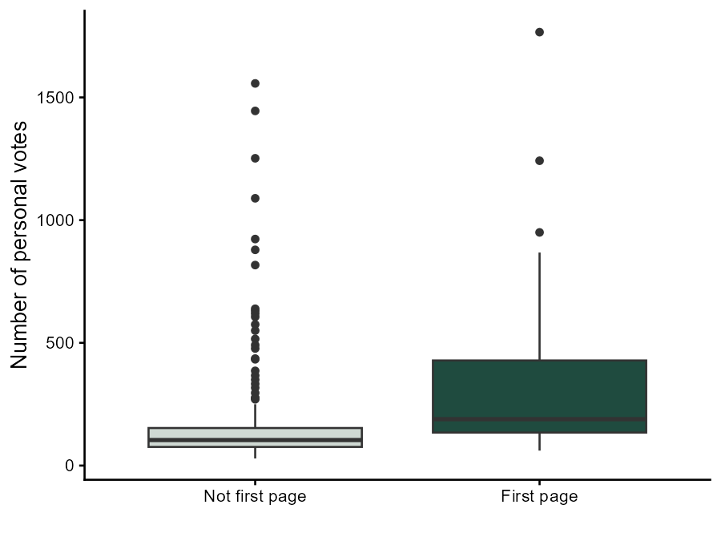

The project
Ballots in Norwegian municipal elections in Oslo are folded. A voter arriving at the polling station receives a folded ballot and sees only the first 31 candidates — the cut-off was number 30 under the layout used in 2011 and 2015, and number 31 under the layout applied in 2019 and 2023. Unless she unfolds the ballot, she never even peruses the rest of the names.
This project tests whether that matters:
H1: In municipal elections in Oslo, there is a bias towards candidates listed on the first page of the ballot, resulting in them receiving a disproportional share of personal votes.
The natural experiment
Establishing causality in ballot position research is hard, because parties rank candidates deliberately: the candidates placed high on the list are the ones parties expect to do well, so ballot position is endogenous. Two parties in Oslo solve this problem by accident, ordering part of their list alphabetically:
- the Conservative Party (Høyre) ordered all their candidates without vote addition — numbers 11 to 65 — alphabetically in 2011
- the Liberal Party (Venstre) always use alphabetical order below a certain position: from number 17 in 2011 and 2015, from number 21 in 2019, and from number 25 in 2023
Being born with a surname beginning with any given letter should not be correlated with political experience, celebrity status, or anything else that attracts personal votes. The alphabetical ordering therefore creates as-if-random conditions, and the estimated effect should be solely due to the candidates' position on the ballot.
Candidates with vote addition (stemmetillegg) are excluded, since they are not randomly assigned to their positions. So is the party veteran Odd Einar Dørum, who was handed the last, honorable spot number 65 by Venstre in 2019 and 2023 outside the alphabetical order, and one outlier who received almost 4000 personal votes where none of the others surpassed 2000.
This leaves 236 candidates, 66 of them on the first page of the ballot.
The analysis
The response variable is the number of personal votes from voters casting a party vote for the candidate's own party (personalvotes_own_loc). The treatment variable, first_page, is built from the candidate's ballot position and the ballot layout in force in the given election year:
mutate(
first_page =
case_when(rank_loc > 30 & year < 2019 ~ 0,
rank_loc > 31 & year > 2015 ~ 0,
.default = 1))The two groups are summarized with a box plot, and the difference in means tested with a t-test.

The result
| Not first page | First page | |
|---|---|---|
| n | 170 | 66 |
| Mean personal votes (SD) | 184 (241) | 328 (315) |
The difference in means is 144 votes to the benefit of the candidates listed on the first page. With a p-value of 0.001, the result is significant at the 95% confidence level: the true difference in means is not equal to 0. The candidates receive more personal votes only by virtue of being listed on the first page of the ballot, which confirms the hypothesis.
Because the advantage comes down to the fold in the paper rather than to anything the candidates did, it is worth noting that alphabetical ordering is not a fair substitute for a ranking either. It is not truly random — candidates cannot escape their surname unless they legally change it, and for candidates who run repeatedly, the disadvantage carries from one election to the next.
The data
The underlying data set covers candidates of the nine parties with stable representation on the Oslo City Council in the municipal elections of 2011, 2015, 2019 and 2023. It is derived from two data sets available at jon.fiva.no/data.htm: the Local Candidate Dataset (LCD v12) by Jon H. Fiva, Rune J. Sørensen and Reidar Vøllo, and Norwegian Parliamentary Elections 1906–2021 by Jon H. Fiva and Daniel M. Smith.
Analysis performed in R using tidyverse and gtsummary. See the full first_page_natural_experiment.qmd source for the complete, runnable code.